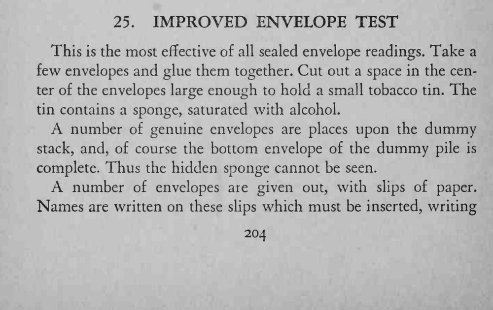
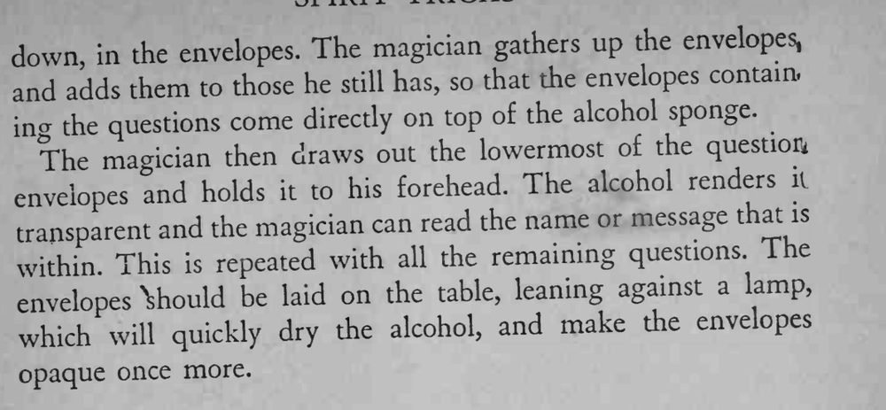

观众在一叠信封里写好问题并封好；魔术师把信封贴到额头，竟能透过信封读出里面的名字和信息。
海绵湿度要够但不能渗湿信封，读完及时晾干，信封才能恢复原样。


This is the most effective of all sealed envelope readings. Take a few envelopes and glue them together. Cut out a space in the center of the envelopes large enough to hold a small tobacco tin. The tin contains a sponge, saturated with alcohol. A number of genuine envelopes are places upon the dummy stack, and, of course the bottom envelope of the dummy pile is complete. Thus the hidden sponge cannot be seen. A number of envelopes are given out, with slips of paper. Names are written on these slips which must be inserted, writing down, the envelopes. The magician gathers up the envelopes, and adds them to those he still has, so that the envelopes contain, questions come directly on top of the alcohol sponge. inothe The magician then draws out the lowermost of the question envelopes and holds it to his forehead. The alcohol renders il and the magician can read the name or message that is transparent This repeated with all the remaining questions The within. is envelopes \hould be laid on the table, leaning against a lamp, which will quickly dry the alcohol, and make the envelopes opaque once more.